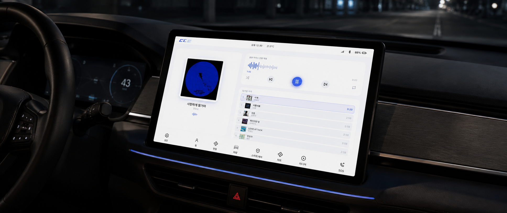
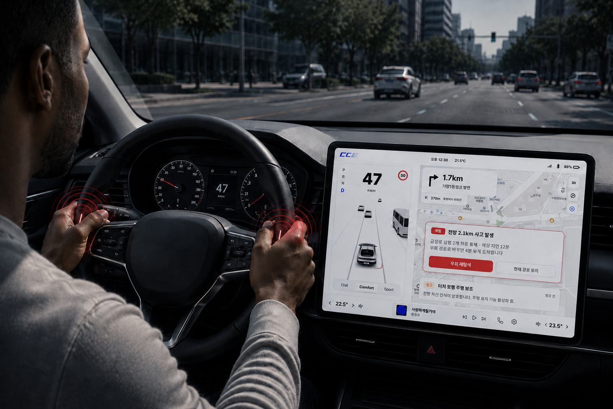
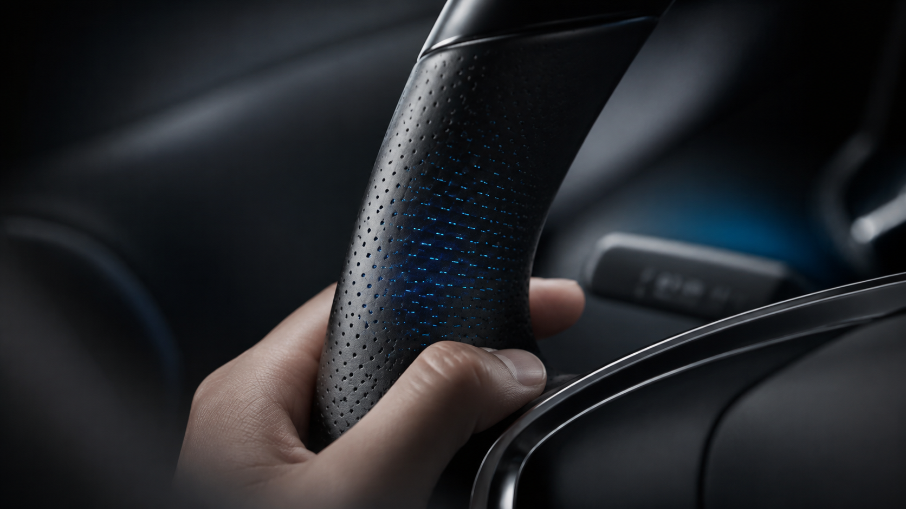
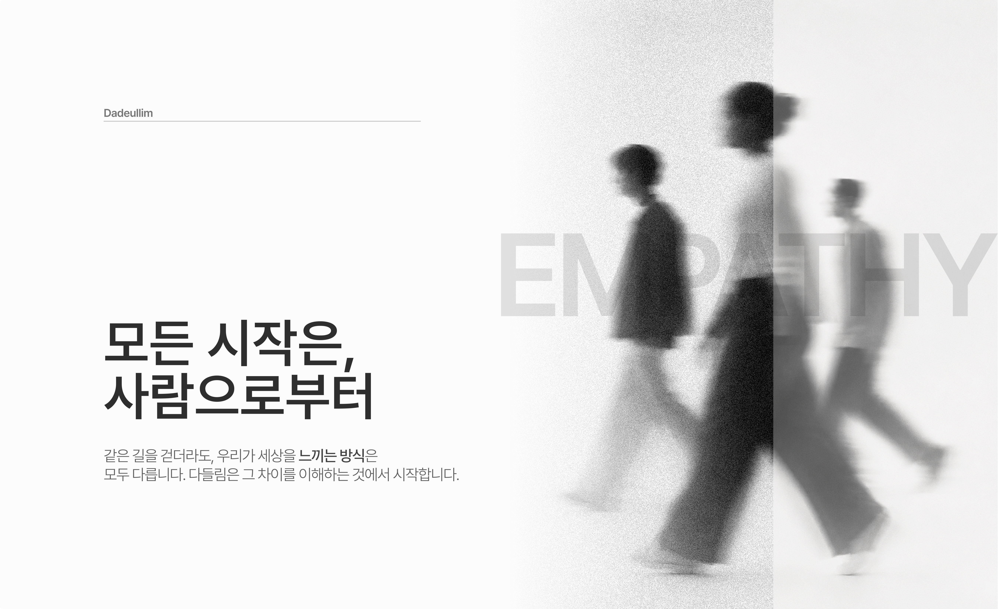
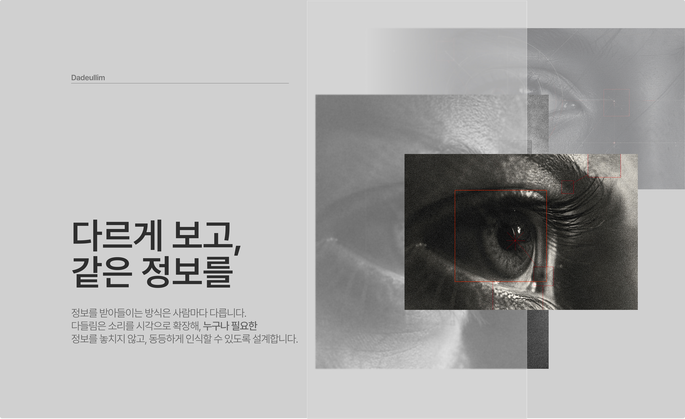
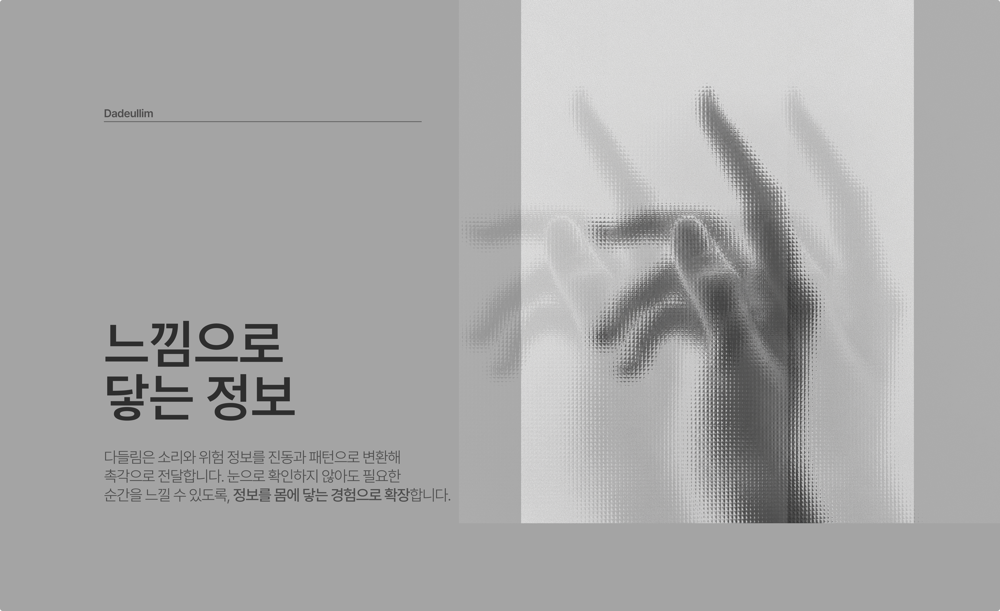
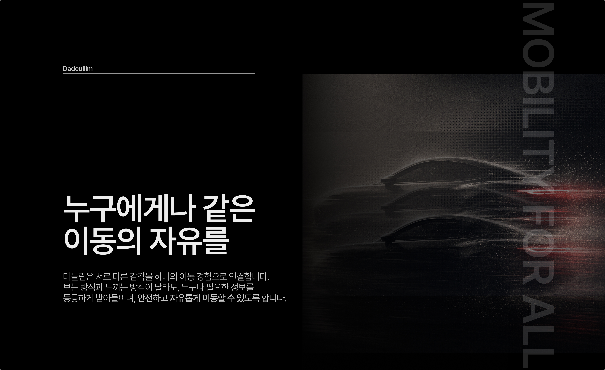

BRAND VALUE 01
모두를 위한 감각
다들림은 특정한 하나의 감각에 의존하지 않습니다. 서로 다른 방식으로 세상을 인지하는 모두가 같은 이동 경험을 누릴 수 있도록 감각의 경계를 넓힙니다.
다들림이라는 브랜드는 들을 수 있는 사람만을 위한 이동이 아니라,
모든 사람이 함께하는 이동을 위해 존재합니다.



BRAND VALUE 01
다들림은 특정한 하나의 감각에 의존하지 않습니다. 서로 다른 방식으로 세상을 인지하는 모두가 같은 이동 경험을 누릴 수 있도록 감각의 경계를 넓힙니다.
BRAND VALUE 02
소리를 시각과 촉각의 신호로 확장해 필요한 정보를 빠르고 자연스럽게 이해하도록 합니다. 복잡한 설명보다 즉각적인 감각을 통해 상황을 인지할 수 있도록 설계합니다.
BRAND VALUE 03
사람과 차량, 그리고 주변 환경에서 발생하는 다양한 신호를 하나의 경험으로 연결합니다. 끊김 없는 정보 전달을 통해 더 안전하고 편안한 이동을 만듭니다.



